About me
Hey, welcome to my blog! My name is Niklas Feil and I am a Computer Science student. I am currently in my first semester of my Master's degree at the TU Darmstadt. Previously, I finished my Bachelor's degree in Mainz at the Johannes Gutenberg Universität.
This website is meant to showcase most, if not all, of my meaningful projects I have worked on.
- IARVR - Implementing a custom locomotion technique in VR using Unity
- Prop Hunt - Creating an online multiplayer experience using Unreal Engine 5
- Raytracing an ocean using WebGL2
- Programming a discord bot using Rust and Serenity
VR Wizardry
Introduction
In October of 2024, I started studying for me Master's degree in Computer Science at the TU Darmstadt. In one of my first courses roughly named "Interaction in Augmented and Virtual Reality", we students were given the possibility of receiving a virtual reality headset for the semester to experiment with. In order to get acquainted with the world of virtual reality and especially development with and for a VR headset, we were given a project.
Project goal
The project's main goal was to create a short VR experience consisting of a parkour including multiple small interaction challenges, in which the player is supposed to interact with an object. Consequently, in order to complete this parkour, a user needs some kind of locomotion and interaction technique. Our task as developers was to find both a way of locomotion and a way to interact with an object and implement it using the Unity Game Engine and a Meta Quest 2.
Project setup
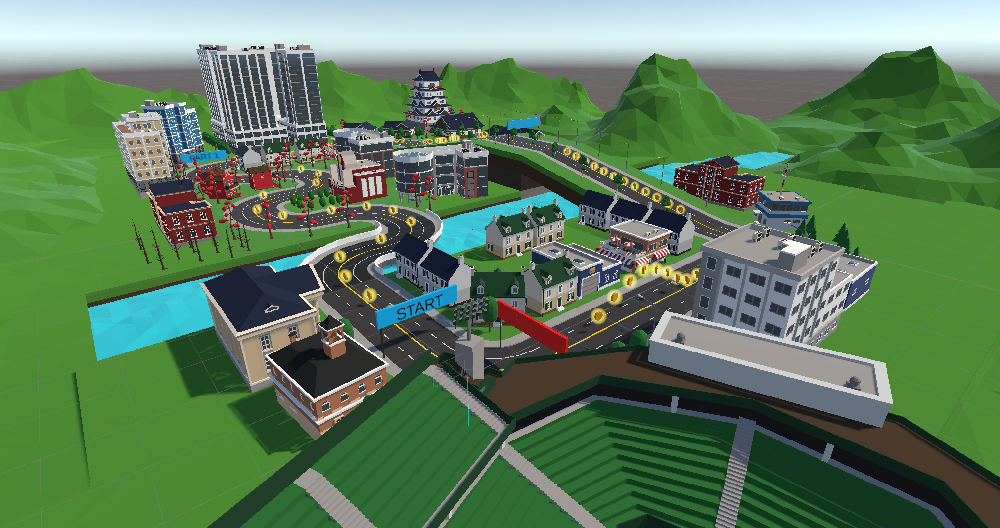
The picture and video above show the VR parkour. In order to move, the player pulls themself by essentially grabbing the air using the grab buttons on their controllers. Once the starting line is traversed, giant golden coins appear. After moving along the path and collecting coins for a while, the player finds themself confronted with a glow and a button that starts an interaction challenge.
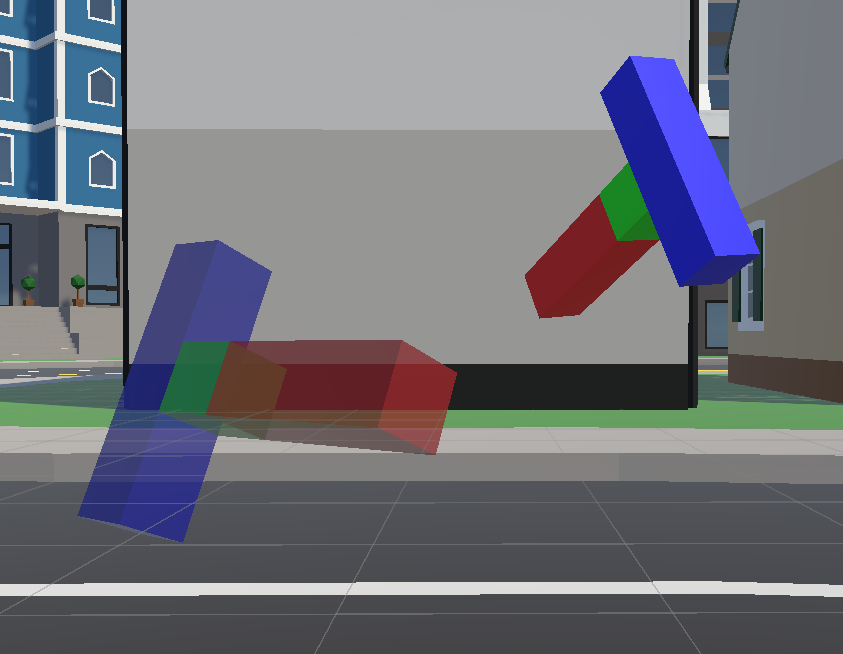
Upon activation, a T shaped object appears in front of the player, accompanied by a silhouette of the same shape. The player is tasked to move the objects into its silhouette using grabbing mechanics found similarly in most VR games. Upon completion, the player's accuracy in placing the object is evaluated and credited to the player's score.
Afterwards, the parkour continues until the player starts the next interaction challenge. Upon crossing the finish line, the player is greeted by their score and an audibly cheering crowd. Yay, you did it!
Motivation
Crafting ideas isn't always the easiest part of development. One does not simply think really hard about something and it just plops into their head completely thought out. No, brainstorming is a process that can take several days and weeks. It continues after work, in your free time, maybe even when trying to sleep. It's a process that just does not let you go.
Coming back to the task at hand, I needed a way for the player to traverse the parkour that feels interesting, fun and, important for VR games especially, immersive. In one of the first classes, we were shown a number of previous students' ideas. One student stood out for me in this selection of examples. This student changed the parkour to be traversed by canoe. What felt special to me was the way they did it. In order to add presence for the player, they simulated the paddle by attaching the controllers onto a real wooden stick for the player to move around like they would a paddle in the real world. I felt it is an interesting way of adding presence to one's simulation, which is why I wanted to do something similar for my parkour.
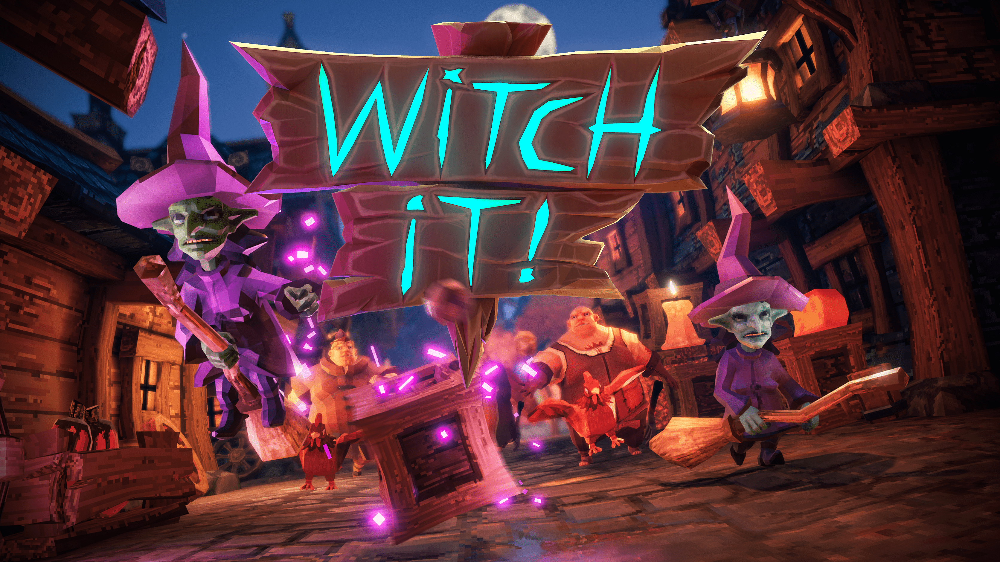
The setting I was going for, however, was going to be rather different than that one student's. When thinking about what direction I wanted to head in, I thought of one of my previous projects, which was inspired by a video game called "Witch It". It is a multiplayer game in which you play as small witches trying to disguise themselves as props in order to not get caught by player's of the opposing team. While my other project utilized the game's principle of Prop Hunt, for my parkour, I wanted to harness the setting of wizardry.
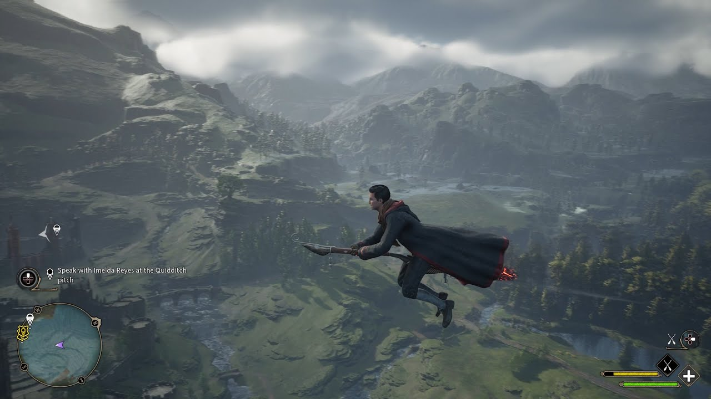 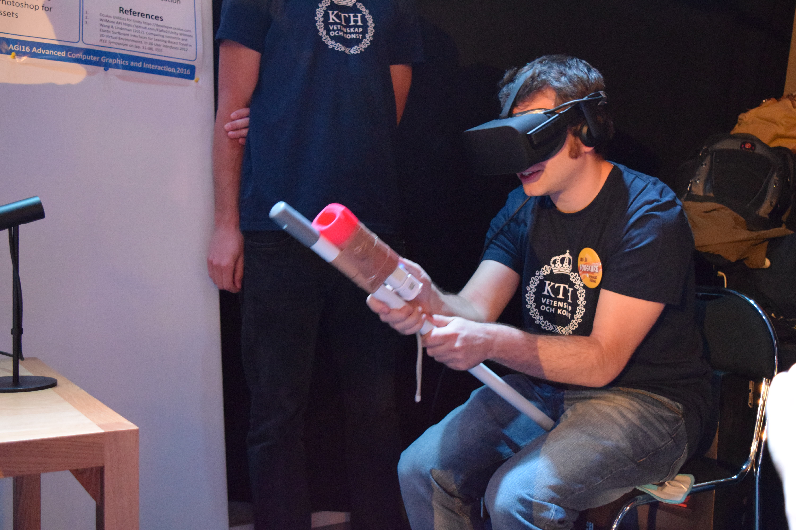
Additionally, I was playing through Hogwarts Legacy, a game set in the Harry Potter Universe. A big part of this game is exploring the world around Hogwarts using your trusty broomstick. Totally engulfed by the wizarding world, I set myself the goal of implementing a similar mechanic for my simulation. Upon further research, I stumbled upon another group with a similar idea. They implemented a similar system using a real stick by strapping a Nintendo Wii remote to it.
As a result of all those influences, I decided to employ a magical setting in which the player flies along the parkour using a broomstick in both the virtual and real world.
Locomotion: Flying around on a broomstick
Brainstorming ideas
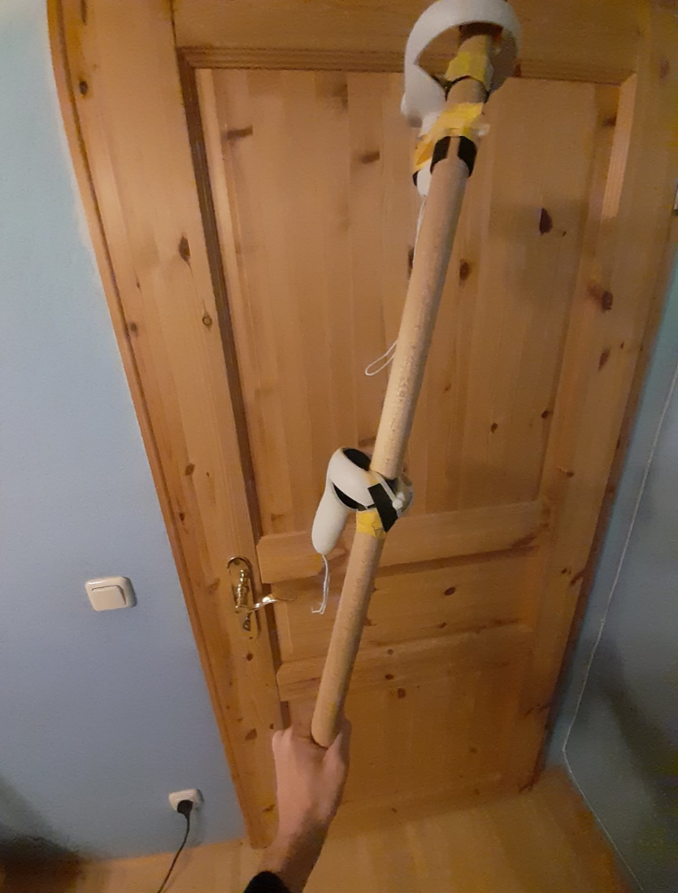 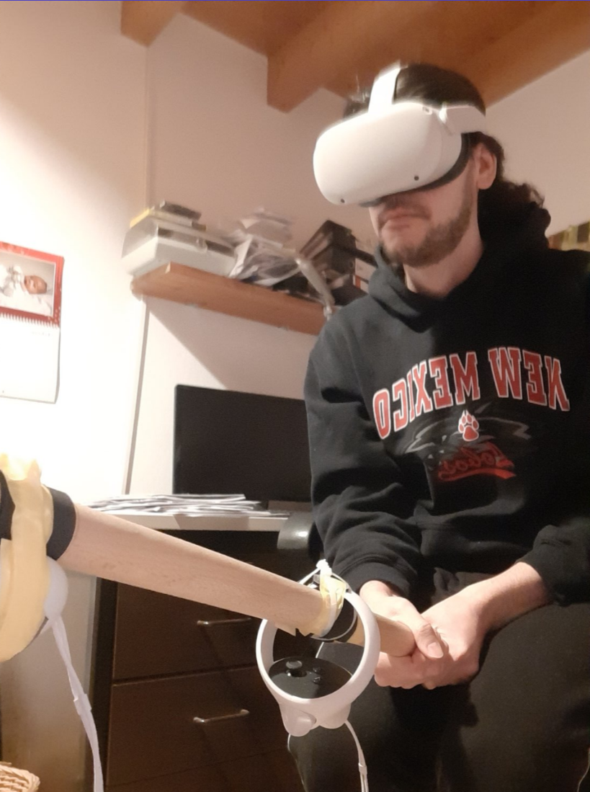
As mentioned in the Motivation chapter, my main idea for parkour traversal was flying around on a broomstick by attaching the VR controllers to a real stick in order to provide haptic feedback and thus more presence and immersion in the game. To fully deliver the wizard experience with my demo, locomotion should not require any button input, but instead be controlled entirely through player interaction using their body and the stick they would be riding on. This means that I would have to find a way for the player to intuitively traverse 3D-space, as the broomstick can not only fly in a plane parallel to the ground, but also needs a way of adding height.
Looking at the broom movement in Hogwarts Legacy (shown in the video above), the player is able to fly around using the left stick to choose a direction and accelerating by a button press. However, they are also able to add and remove height using the right stick by pushing up or down respectively. This would mean that the player is able to use the left stick to move around a plane and the right stick could rotate this movement plane. Additionally, the player is able to solely change height when only moving using the right stick.
My initial thought was how I could convincingly replicate this movement in Virtual Reality without buttons using only player and stick movement. One idea was to restrict the player to planar motion parallel to the ground. To move along the plane, the player would tilt the stick downwards to move forward and upwards to move backwards, changing directions by changing the orientation of the stick and their body. This would roughly reflect the animations used in the game. But how do we add height? Using this method and thus sticking to the in-game animations of Hogwarts Legacy, adding height would prove difficult. One way I could think of was a height calibration system that would measure the player's initial height. Afterwards, the player could increase or decrease their in-game height by increasing or lowering their distance to the ground respectively.
On a technical level, I am sure this mechanic could be possible, as the player needs to set the floor level upon starting their Meta Quest. However, I felt like this method would feel really awkward and unintuitive. In order for the player to reliably change and adjust their height, they would need to be standing with a slight bent of their knees. On top of feeling janky, it would lead to major exhaustion, as players would constantly need to do squats while playing. Additionally, having the player sit down makes sense for the purpose of realism, as wizards also sit on a broom. The constant pressure on the player's legs and the direct contact to the ground would break immersion and would leave the player tired after a short while already.
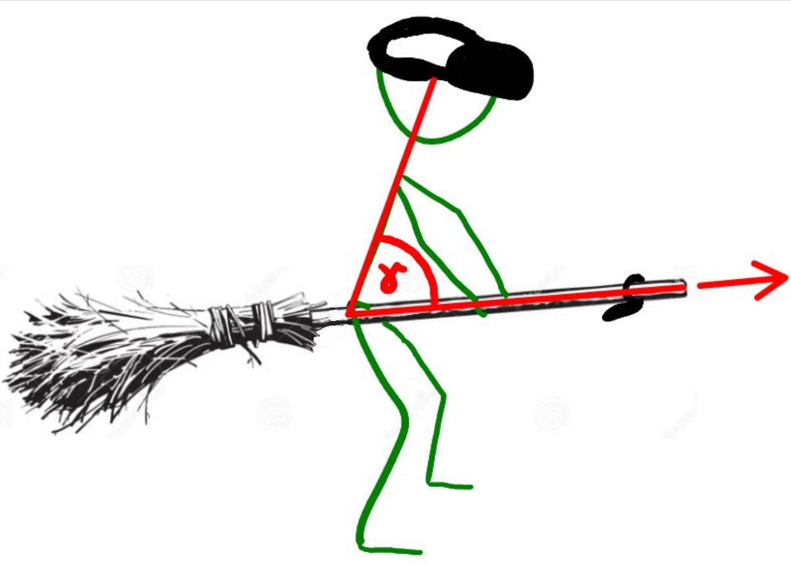
In the end, I decided to go with the control scheme as presented in the image above. The player's movement direction is decided by where the broom, a.k.a the player's stick, points. As a result, the player is not restrained to a plane when sitting. This also means that the player could not simply move the broomstick as a means of acceleration. In order to accelerate or decelerate, the player could lean forward or backward respectively. This would not only make sense as it reduces friction, but also roughly resembles what happens in the Harry Potter universe. Although flying directly upwards poses difficulties using this method, I feel like this approach performs well taking into account the limitations.
Implementation
To start off, I needed to replicate the stick built out of tools from my local hardware store in game by attaching a broomstick mesh to the right controller. This results in the broomstick following the controller's every movement, making them stick together just like in reality. Of course, proper adjustments would be required, but with a bit of moving around the mesh, it looks convincing enough for the player to believe they are holding the broomstick in their real hands.
The chosen means of locomotion, which is shown and described at the end of the previous segment "Brainstorming ideas", requires two important informations:
- The direction in which the broomstick points
- The angle between the player's upper body and the broomstick
We can approximate the player's upper body using a line defined by two points: The VR headset's position and the player's "intersection" with the broom, i.e. their seating position. The player's seating position can be set multiple ways. One way would be to also attach the left controller to the stick around where the player would sit. However, especially with a seated experience, this poses problems since it would be in the way of the player when sitting down or leaning backward for instance. Another way, which I opted for, is to place an empty object within the broom to indicate the rough seating position. This allows us to calculate the necessary vectors using the right controller's position, which is near the tip of the stick, the seating position and the HMD's position as shown in the illustration above.
Using the following code, we get the flying direction along with the player speed:
public GameObject seatingPositionObject;
[SerializeField] private float speedMultiplier;
private Vector3 seatingPosition;
private Vector3 broomControllerPosition;
private Vector3 headPosition;
private Vector3 seatToHead;
private Vector3 seatToController;
private Vector3 movementDirection;
[SerializeField] private AnimationCurve speedAnimationCurve;
void Update()
{
// Setting positions
seatingPosition = seatingPositionObject.transform.position;
broomControllerPosition = OVRInput.GetLocalControllerPosition(rightController) + transform.position;
headPosition = hmd.transform.position;
// Setting up essential vectors from seat to head and tip.
// Normalize so upper body's size does not matter for acceleration
// and speed stays independent of controller placement on broom
seatToController = (broomControllerPosition - seatingPosition).normalized;
seatToHead = (headPosition - seatingPosition).normalized;
// speedValue depends on the orthogonal projection of seatToHead on seatToController
movementDirection = seatToController;
float dot_product = Vector3.Dot(seatToHead, seatToController);
float speedValue = speedAnimationCurve.Evaluate(dot_product) * speedMultiplier * Time.deltaTime;
transform.position = transform.position + movementDirection * speedValue;
}
Instead of calculating the exact angle, calculating the scalar product perfectly suits our needs, as the scalar product's mathematical properties already suits the intended behaviour:
- Being upright holds movement
- Leaning forward accelerates
- Leaning backward decelerates
One important question remains: How exactly do we process this information?
One way would be to build an acceleration system, which means that leaning would change the player's acceleration instead of changing the velocity directly. This system would also require a sort of drag so the player does not fly on forever when being upright. However, after playtesting I decided against this system for the simple reason that it makes controlling the broom much more difficult and frustrating. Instead, I opted for changing the velocity directly by using some sort of constant multiplier or, in the final version, a spline function. Using a spline, I was able to adjust the movement to feel better. I decided to adjust it a little so instead of linear growth, leaning only a little results in very little motion, but leaning far increases the velocity more. I feel like this is a good way of implementing the movement because, unlike in games using a controller or keyboard, the velocity is directly linked to the player's pose which cannot change too drastically, leading to more responsive gameplay. Also, I can imagine a magical flying broomstick does not really care about physical accuracy and can just change velocity as the flier wants it to!
Problems faced along the way
Fortunately, I did not have great issues with the implementation, as it is rather straight forward. The biggest challenges regarding locomotion were faced when I was thinking about what would feel the best and how to traverse 3D-space with the limited control options the player is given, which I already talked about previously. Later on, when constructing and implementing my interaction technique, I faced a lot more challenges, which will be discussed later.
Possible improvements
There are a few issues I would like to point out, that mostly boil down to one major issue: Scale.
With this mechanic, flying way up in the air through a big open landscape at top speed is probably what it most excels at and where it is the most fun. Here, however, the player flies through a rather small parcour that does not really let the locomotion show its full potential. Probably the simplest way this could be achieved is by simply scaling down the player or scaling up the environment. With a bigger environment, the player could be much faster and feel more like they are speeding through the air on a magical broomstick. Adding wind soundeffects and some speed lines along the screenedges might also improve this feeling.
Another improvement I can think of regards the player's interaction with the stick. In the demo video posted at the top of the page, I sit on my old, spinnable gaming chair and put the stick between my legs as far as it allows me to still stay in control of the movement. It would be better to play on a small rotatable stool that does not restrict the player's movement with their upper body. Also, an interesting idea to check out would be similar to the way the people from the Hoverbroom project did it, in which the chair is adjusted (by cutting a hole into it for example) and the stick inserted neatly. However, the risk of restricting the maneuverability can be great.
Interaction: Casting spells to recollect your knowledge
Initial ideas
With the player able to traverse the parkour, the only thing left is for them to be able to complete the sprayed in interaction challenges. Of course, I wanted to stay with the wizarding experience and elevate it to the next level.
Staying with the inspiration of Hogwarts Legacy, I scoured my brain for possible occurences of the player interacting with the environment that could suit these small challenges and virtual reality. In the game, there are small pages flying around scattered all across the in-game world. Once the player encounters one such field page, the player can cast Accio, an attraction spell, on them to pull it towards them and catch it in their book. Judging by the animation, it looks a lot like the grabbing mechanic used in Half Life Alyx, where the player can select an item and do a flicking motion to flick it towards them.
As my first thought, I intended to bring this exact behaviour into my demo. This would include a small wand similar to the wands in the Harry Potter universe. This, however, would pose several challenges:
- Where does the wand come from and how does the player pick it up?
- How does the player control the wand?
- What happens with the broomstick while the player is using the wand?
- What happens with the collectable after it's attracted? Where does it go?
I had a few different ideas about how to bring this mechanic into VR and the context of this parkour. In order to approach the first challenge, I thought about the wand either spawning next to the player or right in their hand once they start the interaction challenge. This would, however, depend on whether the player should grab the wand with one of their hands using hand tracking or rather with the other controller that is not connected to the stick. The problem with using the second controller to pick up and control the wand, however, would be mainly the transition between riding the broomstick, where the other controller is not used, and the challenge. The player would either have to keep the controller nearby for them to grab it or in one of their hands. Grabbing the controller from the floor, the player would need to interact with parts of the reals world that do not have an in-game representation, breaking immersion in the process. An alternative is hand tracking, which could also prove suboptimal, as the player would close their hands around the wand, having nothing in their hand in the real world, which might also be awkward.
So let's assume the player grabs the wand with whatever method or it spawns in their hand. They are able to point it towards the flying book. What would feel the best when it comes to interacting with the flying page or book? Before the player would flick the book towards them, they would first have to somehow summon the thether hitting the flying object. Considering the setting and the limited controlls one would have using hand tracking, I immediately thought of voice control for the player to cast the spell. Casting the Accio spell by actually saying the spell's name felt like it made perfect sense.
One big question about this whole approach with the spawning wand and copying what happens in Hogwart's Legacy as closely as possible is the following:
When the player already has a wooden stick in hand roughly resembling a staff, why should they lay it down to grab an imaginary wand instead?
Approaching the final idea
Instead of spawning a wand that does not provide haptic feedback, I wanted to implement something similar that still contains the essence of witchcraft that used the stick the player was already holding in their hand. Of course, a magical staff would fit this description perfectly. Upon starting the challenge, the broom transforms into your staff, with which you are able to cast spells to retrieve the flying book.
It is, however, still open what happens to the book once the player would fling it towards them. I felt like just collecting it and moving on would be too simple and not entertaining and interactive enough. One thought I had was to insert it into one's purse, but I felt like putting it back into a bookshelf that would spawn beside the player would be better. This could open the possibility of the player being required to put it into the correct place by also rotating it correctly, similarly to the initial project setup.
Later on, I decided to exchange the bookshelf with a servant instead. I feel like a servant teleporting themself to you to help you retrieve your books was a cooler idea that would make you feel more like a powerful archwizard commanding their own army and following. Additionally, it would make more sense looking at voice control, as you would essentially be able to command them, which I think carries the essence of a powerful wizard more than simply spawning a bookshelf.
What is still unclear, however, is how to transition between getting the book out of the sky and then carefully adjusting its position and orientation using some other spell. When the book is pulled, where would it go while the player is casting other spells in order to grab it? Because of this issue, I decided to also change the attraction spell around to instead feature a beam pulling the book towards the player.
With all of these thoughts laid out, the idea I finally decided to implement is the following:
Once the player starts the challenge, one of their servants appears next to them in order to collect the lost book from the player's collection that appears somewhere above them. The wizard, with staff in hand, casts an attraction spell using their voice to get the book close to them. Once the book is close enough, the player casts a new spell to grab it and move it around. Using only movements staff movements, the wizard repositions and rotates the book into the servant's hands using different spells. When finished, the archwizard sends his servant off using a voice command, which is followed by the servant obediently leaving with the book and the wizard continuing with their broom flight.
As an alternative for voice control, the player could also activate spells by gesturing with the hand that is not holding the stick. There is a relatively new feature creating the possibility of having one hand and one controller active at the same time, giving the player the possibility of gesturing. I scrapped this idea, however, because they would be able to see their left hand in VR, which might entice them to think they would be able to grab the book using their hand, which is not intended.
Implementation
Magical books
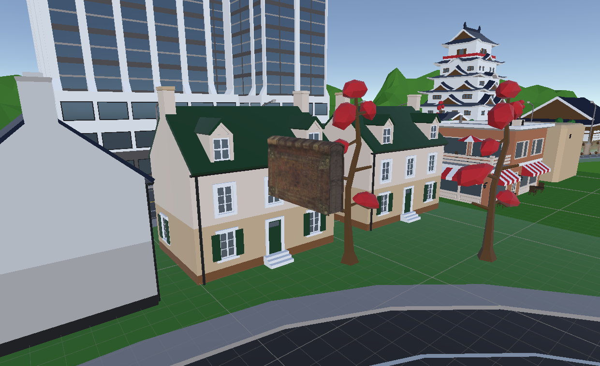
To start off, I added the book that spawns in a random position above the player upon challenge initiation. It consists of a simple book mesh and a script handling its movement. The book's movement depends on how the player interacts with it. It has multiple states that decide how and where the book moves:
- Idle
- Attracted
- Grabbed
- Rotated
- Finished
The book's movement is handled by differentiating these movement modes and setting its target position and way of traversal accordingly. Without any interaction by the player, the book moves in a circle above the player's head. This is achieved by setting the target position to the next step on the circle using basic trigonometry. The book does so uniformly, which means that it uniformly moves towards this position, resulting in even movement without sudden velocity shifts, making it more predictable and easier to hit for the player.
void SetTargetPositionOnCircle()
{
// Flying around in circle
x += Time.deltaTime;
z += Time.deltaTime;
float currentOffsetX = (float) Math.Cos(x * circleMovementSpeed);
float currentOffsetZ = (float) Math.Sin(z * circleMovementSpeed);
currentOffset = new Vector3(currentOffsetX, 0, currentOffsetZ);
targetPosition = centerPosition + currentOffset * circleRadius;
}
void UpdatePositionUniformMovement()
{
Vector3 newPositionAfterUpdate = Vector3.MoveTowards(transform.position, targetPosition, maxDistanceDelta);
movementThisUpdate = newPositionAfterUpdate - transform.position;
transform.position = newPositionAfterUpdate;
}
Attraction Spell
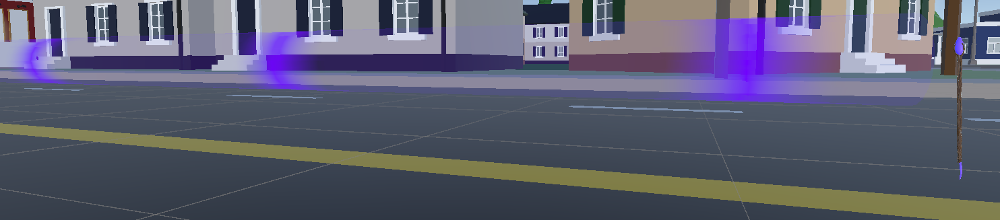
The vision for an attraction spell I decided to go with can be described as a beam that slowly attracts the book towards its root, i.e. the staff's tip. The visual aspect of this spell is handled by attaching a long cylinder coming out of the staff's tip. Upon activation (while debugging the press of a button, later on a voice command), it turns visible and can interact with the book accordingly by changing its movement mode on overlap. To sell the impression of a beam pulling objects toward oneself, I created a scrolling shader using a mask.
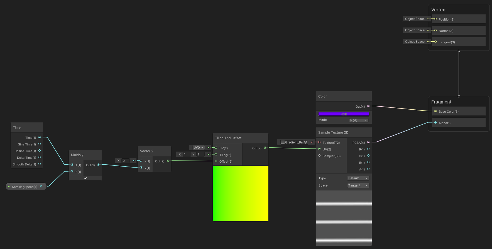
The result is a beam that is mostly seethrough with purple lines scrolling along the mesh toward the player, giving the impression of a pull-in effect. This shader, however, created some problems in virtual reality at first. More on that in a later section. To finish the effect, I added a fitting sound effect.
Once the beam overlaps with the book, its movement mode is set to Attracted and its target position is updated to be around the base of the spell. This result in the book being drawn in towards the player as long as it is within the spell's hitbox. In case the player stops using the spell while the book is still being attracted or the books slips out of the beam, it slowly returns to its idle state.
Grabbing Spell
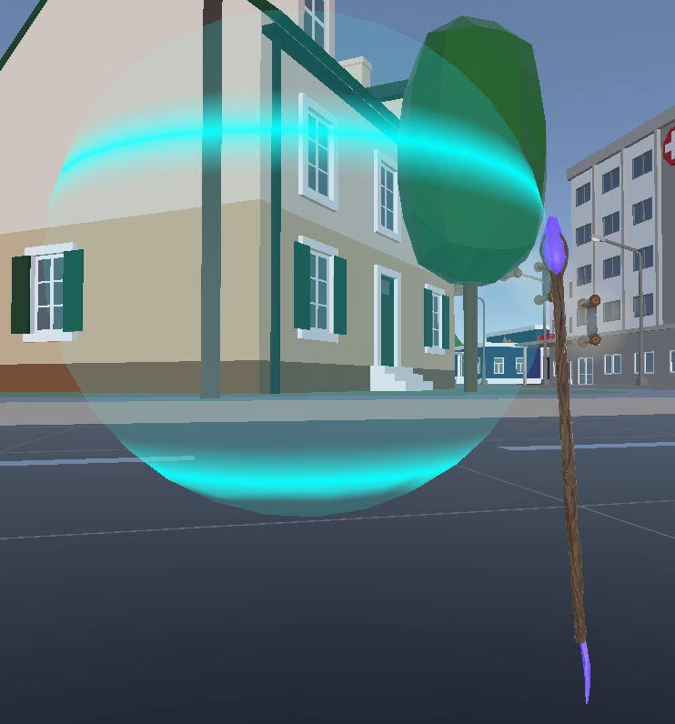
Once the book is close, the player is able to grab it using their grabbing spell. This creates a sphere attached to the staff's tip, that draws in the book upon contact.
Visually, I reused the same approach as for the attraction spell, exchanging the cylindrical mesh with a sphere and using the same shader with a light blue color instead. Suprisingly, the scrolling shader with a slightly different mask fits the spell pretty well, as its semantic changes drastically when put onto a sphere, not conveying the feeling of movement like it does with a cylinder.
Upon activation and overlap with the book, the book's target position is set to the sphere's center and its movement mode is set to Grabbed. This results in the book moving towards the sphere's center using spring behaviour, which means that it will follow the staff's movement organically by being pulled into the sphere's center, leading to occasional small overshoots.
void UpdatePositionSpringMovement()
{
Vector3 displacement = targetPosition - transform.position;
Vector3 springForce = stiffness * displacement;
Vector3 dampingForce = damping * grabbedVelocity;
Vector3 force = springForce - dampingForce;
Vector3 acceleration = force;
grabbedVelocity += acceleration * Time.deltaTime;
transform.position += grabbedVelocity * Time.deltaTime;
}
Rotation Spell
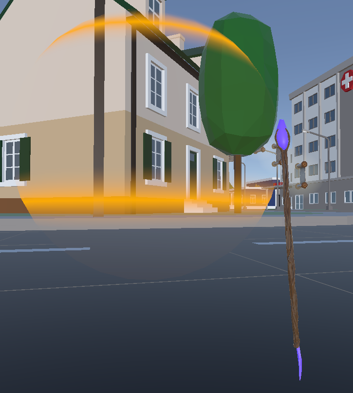
While the player is holding the book, they are able to activate the rotation spell. This locks the sphere and the book in place, enabling the player to rotate the book by moving the staff's tip in circles.
To make the rotation as comfortable and intuitive as possible, I did not want the player to need to move the tip around the book to rotate it. Instead, one can imagine the player rotating the book by moving the staff's tip along a sphere's surface
of which the center is defined as the player moves their staff:
private Queue<Vector3> controllerPositions = new Queue<Vector3>(maxStoredControllerPositions);
private Vector3 meanControllerPosition;
private Vector3 lastControllerMeanDifference;
private Vector3 currentControllerMeanDifference;
void LateUpdate()
{
// ...
lastControllerMeanDifference = currentControllerMeanDifference;
currentControllerMeanDifference = -meanControllerPosition + OVRInput.GetLocalControllerPosition(controller);
// ...
}
void UpdateControllerPositionQueue()
{
controllerPositions.Enqueue(OVRInput.GetLocalControllerPosition(controller));
if (controllerPositions.Count > 120)
{
controllerPositions.Dequeue();
}
}
void UpdateMeanControllerPosition()
{
// Recalculate mean position of controller every update by converting Queue to Array. This is very inefficient and should be optimized by using the current meanControllePosition and the new position to update it without the O(n) conversion.
// This optimization is for later though.
Array controllerPositionsArray = controllerPositions.ToArray();
meanControllerPosition = controllerPositionsArray.OfType<Vector3>().Aggregate((acc, cur) => acc + cur) / controllerPositionsArray.Length;
}
void RotateBook()
{
// Calculate rotation axis by looking at the unit circle around the mean controller position.
// Use cross product of last update's position on unit circle and current position on unit circle.
// Unity uses a left-handed coordinate system, so use previous position first in cross product.
Vector3 previousPositionOnUnitCircle = lastControllerMeanDifference.normalized;
Vector3 currentPositionOnUnitCircle = currentControllerMeanDifference.normalized;
Vector3 rotationAxis = Vector3.Cross(previousPositionOnUnitCircle, currentPositionOnUnitCircle);
// Calculate the angle of rotation
float angle = Vector3.Angle(previousPositionOnUnitCircle, currentPositionOnUnitCircle);
// Calculate quaternion from axis and angle
targetAngleVelocity = Quaternion.AngleAxis(angle, rotationAxis).normalized;
// Interrupt when player is not moving the controller for a longer period as the book would jitter and rotate uncontrollably.
if (lastControllerMeanDifference.magnitude < 0.03 || currentControllerMeanDifference.magnitude < 0.03)
{
targetAngleVelocity = Quaternion.identity;
}
// Smoothly rotate the book by using a spring mechanism like with the book movement.
currentAngleVelocity = Quaternion.Slerp(currentAngleVelocity, targetAngleVelocity, Time.deltaTime * rotationSpeed);
float currentAngle = Quaternion.Angle(Quaternion.identity, currentAngleVelocity);
if (currentAngle > maxRotationSpeed)
{
currentAngleVelocity = Quaternion.Slerp(Quaternion.identity, currentAngleVelocity, maxRotationSpeed / currentAngle);
}
// Rotate the book around the calculated axis by the calculated angle.
FlyingBook.transform.Rotate(currentAngleVelocity.eulerAngles, Space.World);
}
We calculate the mean of the controller positions, i.e. the positions of the staff's tip, of the past 120 updates by adding the positions to a queue each update, whose content is then summed up and divided by the queue's length. Once the mean is known, the axis of rotation to rotate the book around can be calculated using the controllers previous and current position.
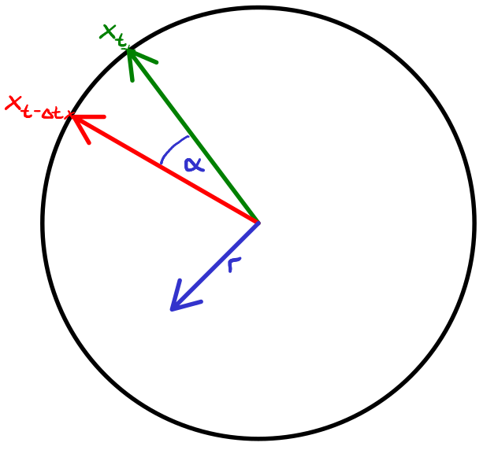
To calculate the axis of rotation, we project both the vector from mean to the controller position during the last update and the vector from mean to the controller position during the current update onto the unit sphere with the mean at its center by normalizing the vectors. By calculating their cross product, we get the axis of rotation around which the previous controller position would need to rotate around to get to the current controller position. Additionally, we use the angle between the two vectors to get the amount of rotation needed.
Using the calculated axis of rotation and the angle, they can be applied to the book either directly to correspond directly to the controller movement, or, which is closer to the mechanic I envisioned, choose a more physically accurate approach by accounting for the book's drag, making the mechanic feel much more realistic and engaging.
Trusty servant
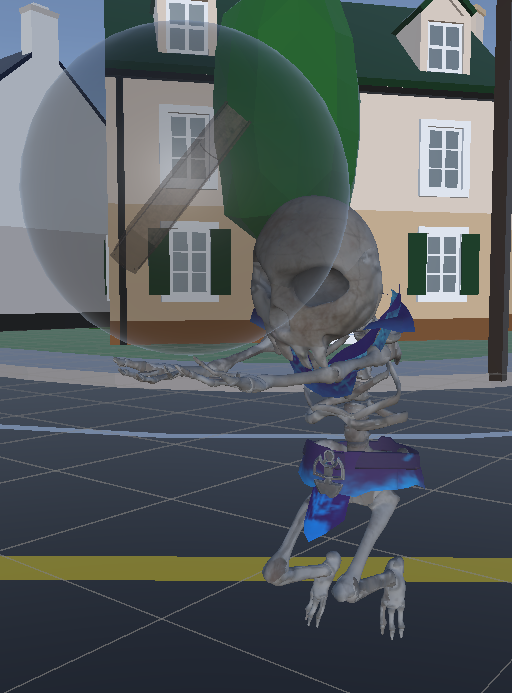
When looking at the default challenge, the player is supposed to grab a T shape and place it in a certain position with a given orientation. To do something similar with the book, the player is confronted with a translucent version of the book in a random orientation. As explained previously, one of your trusty skeletal servants appears, greeting you obediently using voice lines I recorded and edited in order to get a voice fitting to one such character.
Once the player hovers the book over the correct spot using the magic, they can release it. If the book is near the servant's magical black sphere, they take over, which stops the book from return to its idle state like it would when releasing it somewhere else, but instead putting it into the finished state. Afterwards, the player is able to send the servant away using their voice to command them to leave. This ends the challenge, transforming the staff back into the broom, given the player time to "hop on".
Depending on how accurate the player placed the book, they are credited a score depending on both position and orientation:
manipulationError = Vector3.zero;
manipulationError += targetBook.transform.position - flyingBook.transform.position;
manipulationError += targetBook.transform.rotation.eulerAngles - flyingBook.transform.rotation.eulerAngles;
As for the orientation, I am sure there are better meassures to fairly calculate a score, but for the purpose of this demo, this approach satisfies our needs.
Voice Commands
With all the spells set up and working, the only thing left is to add a way for the player to actually use them. As mentioned previously, using your voice to cast your arsenal of spells and command around your servant is fitting for the narrative and is thus the way to go.
The most common way to setup voice control for VR applications in Unity with Meta headsets is using Wit AI, a web service provided by Meta that uses artificial intelligence in order to translate a user's voice input into text, which can be used to trigger certain events.
For the details on how to use it, there are a couple of tutorials, which I have linked below. But to summarize, an app needs to be created on their website and connected to the game using a server access token. On the website, utterances are added, which are essentially the keywords and phrases that need to be said in order to trigger certain intents, which we can be listened to inside unity, triggering certain functions by adding a Voice Intent Controller.
For my game, I want the player to cast the spells by saying their names using specific words. Below, a state machine illustrates what spells can be used when and what to say to activate them:

At first, I wanted the voice system to listen passively, which would mean that the player would simply have to say the keywords for the spells once they want to cast a spell. Unfortunately, I only found tutorials in which the player pushes a specified button to activate voice input. Once the assigned button is pressed, an activation function is called, starting interaction with the API in order to process the user's voice input. My initial plan was to let it listen passively by simply calling this activation function without the need to press a button, but instead upon challenge initiation. This approach, however, does not work whatsoever, as the app stops listening 20 seconds after the first volume threshold breach or after 2 seconds of silence.
Alternatively, I tried listening to the voice recognition's deactivation event, which would immediately reactivate it again. Without a built-in delay, the activation would almost never be recognized by the API, unfortunately. When adding a small delay between deactivation and activation, the reactivation would work sometimes, but only very unreliably. Adding too small of a delay would mean that the voice recognition system could crash at any point without reliable means to recover, while adding too big of a delay could create big time periods in which the player could say something that would not get picked up on. Of course, simply calling the activation function every update did not help as well.
Unfortunately, the voice control system by Meta using Wit.AI does not support passive listening, which makes sense as that would require us to constantly make API calls, which is would be very resource heavy for their service. I also did not find a way to create a self-hosting solution, although I did not look into it that much, as that would also remove portability, as other player's would have to be connected to my server.
All things considered, I would need to introduce an activation button. With the current setup though, the only button that would not be too immersion breaking and awkward to activate would be the trigger on the left controller, if attached to the stick around where the player would grab the stick. So I added the left controller to the configuration in a place, where the player is able to press the button using their right middle finger for instance, which does not feel as weird as feared. Honestly, it does not feel immersion breaking, which I am glad for considering the lack of alternatives.
So at last, the player is able to cast their spells by holding down the left trigger, saying the spell's name, and releasing the button again. As for the names of the spells, I kept it very simple, simply calling out what the spell does. Alternatively, spells could also be given fancy names, but I wanted to keep them simple in order for the player to memorize them better and also as complicated, self-engineered names might confuse the AI, leading to less responsive spell casting.
Problem faced along the way
Apart from the problems about voice activation I described in the last segment, there were a few other challenges and problems I faced, some of them due to the intricacies of VR development.
Handling multiple states and their correct transitions
For starters, keeping track of multiple state machines that also impact each other, namely the book's movement modes and the player's spells, produced quite a number of bugs during development. While developing the spell casting system, there were always a few fundamental questions to keep in mind:
- What spells the player can cast when?
- What happens to the book if it is currently under the player's control and they switch the spell?
- What needs to happen to the book if the player interrupts their spells or they lose the book?
All these questions needed to be accounted for while developing the interaction system. The risk of ending up in some configuration I did not account for was fairly high. For instance, right before the finish line for the final presentations of the project, a game-breaking issue arose where sometimes the orb the player uses to move the book around would stop following the player's staff, similarly to what is intended during the rotation spell. It seemed to happen rather randomly, but still frequently to happen every other playthrough. At the end, I simply forgot to add code to remount it onto the staff and change its material, which led to the spell being stuck in a limbo state between the rotation and grabbing spell.
Single-pass stereo instanced rendering on custom shaders
Another weird issue I faced concerns custom shaders. Initially, I created the scrolling shader used for the spells using the shader graph. However, once I was done, applied it onto the attraction spell and playtested it, the spell was desynced on my eyes, which meant that both the cylinder's position and orientation were different on both eyes. After searching online, I found out that it was due to single-pass stereo instanced rendering, which is supported for built-in shaders, but not custom shaders. To fix the issue, I rewrote the shader using shader code instead and added the specified lines to solve the desync problem.
Absurdities with getting object positions reliably
Close to the beginning of implementing the spells, I encountered an issue that seems trivial, but posed the first real issue I faced during development. Once the book is hit by the attraction spell, it is supposed to move towards a point marked by an empty object that is a direct child of the right controller. I implemented this in the book movement script, which is attached to the book, which sits at the root of the object hierarchy. I could not directly add the reference of the point marking object to the book prefab, so I added the reference during runtime using the find method using its name. This in itself worked. However, when trying to get its position using transform.position, I instead got a point near the zero, which is also where the book would fly to instead of the player. Even when trying to add the controller position to it, it did not seem to work due to the same issue. To fix the issue, I at first tried to add a dispatcher script to the point, which would calculate its position and dispatch it to the script on the book. Instead, however, I opted to simply do the same in another script attached to the controller itself, which is why the target position for the book's movement is handled by scripts on the controller and its children instead of by the book script itself. Essentially, the positions of the controllers and their children can be rather unreliable and unintuitive when other scripts that are above in the hierarchy try to access them.
Incorrect pivot for rotation
This issue was not due to virtual reality, but a more general issue with Unity. Initially, rotating the book was rather awkward as it did not seem to rotate around its center, more around an off-center pivot. I checked the book mesh multiple times before I realized, that the pivot is not automatically aligned with the center position Unity displays when inspecting it. Moreover, changing the pivot of an object in Unity is not supported directly, which is why I needed to edit the book's pivot manually inside Blender. It was not a big deal, but I still feel like it is worth mentioning.
Major issue with voice activation I was unable to solve
Unfortunately, there are also very bad news concerning the voice control and, consequently, the whole state of the project. While developing using Virtual Desktop to connect to my Quest to the PC, the finished project works just as intended, as can be seen in the demonstration video at the top of the page. When exporting the project and compiling it into an APK, however, my voice cannot be recognized at all. Furthermore, this issue also occurs when not using Virtual Desktop, which means the project is currently only playable using this setup. After extensive research, searching the internet, looking everywhere around Unity, including its settings and the VoiceIntentController, I could not find a fix for this problem. Unfortunately, even a supervisor could not find a fix for the underlying issue (though I am very happy they tried).
The issue here seems to lie deeper within Unity, as there is a warning by Unity concerning audio devices:
(Unity warning about XR_OCULUS_...)
I tried to find out what microphones Unity was detecting and using, which showed that it was actually seeing the correct microphone when I used Virtual Desktop. One special nuance about Virtual Desktop is that it uses Steam VR to manage audio input. As a result, Unity does not have issues with Virtual Desktop, only with the default microphone without using it. The warning message indicates a problem with the audio, but the only connection I could find is to documentation of the Khronos Group, the developers behind used APIs like OpenGL and Vulcan.
Even when switching audio systems around, I did not seem to land a hit. My takeaway from this issue is that there might be some versioning issue or bug concerning some software, maybe Unity. Either that or, which is probably more likely, I missed some very hidden fix. Despite this issue, however, I was still able to fully test out and evaluate the experience.
Additional changes to accomodate the setting
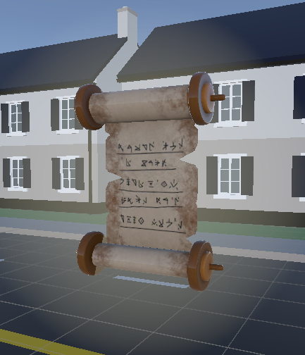
In order to complete the magical experience of playing an archwizard, I also changed the setting slightly. Generally, I really like the idea of a wizard who has lost parts of their knowledge, namely tomes and books. To support this setting, I exchanged the coins that the player would collect in the default parkour for scrolls instead, changing the SFX accordingly:
Additionally, I swapped the background music to something that fits the magical setting more and is a lot more subtle (because honestly, the default music was extremely demanding after a while):
Unfortunately, the final recording I did of my playthrough did not feature any sound except for some that was recorded by the camera. In case you're interested, here is a list of all the other sounds I added, mainly spell sounds and the servant's voice:
Skeleton servant introduction:
Sending skeletonservant away without giving him the book:
Sending skeleton servant away with book:
Attraction spell sound:
Grabbing and rotation spell sound:
One last small thing I wanted to add was a small VFX when the broom transforms into the staff. However, after adding it, it did not show up using the Built-In Shader Pipeline. Once I switched to URP, it was displayed, but afterwards, compiling it into an APK would result in a black screen upon start. I am certain this is fixable, but the VFX was barely visible and very minor anyway, so I scrapped the idea.
Evaluation: Game feel and immersion
The most time during the development, I debugged simply using the two controllers in my hands sitting on my chair, without the stick or voice control. Flying around and casting spells still felt interactive, but it was missing vital immersion and presence, to put it simply. Simply holding the two controllers in my hands and flying around this way did not really feel good. This way, the right controller can be moved in a way that is extremely unnatural ingame, as a simple rotation would already create a situation where the player would realistically not sit on the broomstick anymore. During development, I let another person try flight, which led to them flying around uncontrollably, which, paired with a fear of heights, would lead to a rather unpleasant experience for them.
However, once everything was set up correctly, flying with the stick was much more stable and more controlled. Although it did not fully feel like you were flying around, as the feeling of wind was missing and sitting entirely on the stick restricts the movement to a point where changing altitude is practically impossible, flying around in VR actually felt pretty immersive and fun. The haptic feedback with an actual stick helped a ton, especially when comparing it to simply using controllers. Letting the ealier mentioned person fly again, they felt much more in control and also seemed to have a lot more fun.
Transitioning from flying to spell casting for me is also rather seamless. I feel it fits well into the setting's narrative and afterwards gives enough time to recollect yourself before flying off again. My other participant, however, had slight problems hitting the Start buttons for the challenges, as they need to be hit with the staff's tip, which can be rather tricky if not used to the controlls. Fortunately though, one can readjust theit position rather simply by leaning backwards. For this, however, the mobility must be given. The chair I used in the video on top of the page is rather restrictive, which restricted me a bit, especially with the backrest being upright like in the beginning of the video. Once it is down, I did not feel restricted anymore except for possibly slightly the armrests.
Coming to the spellcasting, I am quite happy with how it turned out. Using your voice to activate the spells feels natural (although sometimes repetitions are needed) and fits into the setting. Pressing the activation button is pretty easy and does not worsen the experience. Once again, the haptic feedback from the stick really helps immerse you into the game and make you feel like you are actually holding a magical staff in your hand with which you are casting your spells, supported by both VFX and SFX. With that said, I feel like this idea can be expanded on by introducing more spells that do more things than interact with a book. Ideas that come to mind are offensive spells with which you need to fight off enemies trying to distract you. Also, placing the book in the correct orientation can be quite a challenge, as slight adjustments with the rotation spell are rather difficult.
One last thing I want to mention is collision. As of the final version of the demo, there are no collisions with the environment, enabling you to fly off into space, into houses and trees, and into the floor below the map. For me, however, this did not hurt the immersion of the game. When flying around, you are mostly following the paths set by the scrolls, resulting in good players not even realising there are no collisions. For my other participant, however, having no collision meant sometimes flying into the ground or through trees, as they had slightly more difficulties controlling the broomstick, as they are not used to playing video games. For the sake of supporting newer players and improving their immersion and presence, collisions taking effect on the brooms velocity probably make sense.
Overall though, despite its flaws, the gameplay as a flying, spellcasting archwizard feels fun and engaging. Flying with haptic feedback help sell the setting and the weight of the stick feels good, especially when using the rotation spell.
What I learned on the way
This project was the first time I built something bigger than a youtube introductory tutorial with Unity. I had the pleasure of working with Unreal Engine previously on a previous project, so I already somewhat kney what I was getting into. As I already had a little experience with Unity, I was able to quickly grasp its basics. The project taught me how to orient myself in the Unity ecosystem so I can work on bigger projects in the future.
On the other hand, developing for VR was very new to me. I have played games in VR before using my own Meta Quest, but I never tried developing games for it, as it seemed out of my league to me at first. Fortunately, VR development is made easier than I expected in modern-day game engines, enabling you to jump in immediately. However, I also learned that VR has its quirks that can cause issues you normally do not have to face when creating a desktop application. One such quirk that comes to my mind is the shader issue I described earlier.
So overall, I can say that I am now more encouraged than ever to start creating games using either game engine and maybe even start developing something for VR again in the near future. Honestly though, I will probably leave out voice control in the near future. It has caused me enough trouble for the next few months.
Conclusion
To summarize, in my and my participant's eyes, the project was a success. Flying and spellcasting in VR feels engaging and especially using a real stick to add haptic feedback feels really good. Though it does not fully immerse you due to the limitation of current commercially available VR tech, the stick's weight helps elevate the illusion as it not only tricks your eyes and ears, but also your arms. Voice control is pretty responsive on my setup and also creates a fun experience as a wizard.
Sources
I used Github Copilot, thus, some code was generated by artificial intelligence.
https://youtu.be/huc6z1RWCrE?si=DUNLS0BNBYAQNEQy
https://youtu.be/SJ96P-ZhBoc?si=q3D1YV0f3dlimpaW
https://gametrex.com/wp-content/uploads/2019/02/Witch-It-Free-Download.png
https://i.ytimg.com/vi/u4eaM9IRMIE/maxresdefault.jpg
https://people.kth.se/~hhofer/hoverbroom/
https://sketchfab.com/3d-models/atom-rpg-low-poly-broom-2661b18596534962ac08879972721c00
https://sketchfab.com/3d-models/old-book-73db31780eef4940af7ad8af8868d684